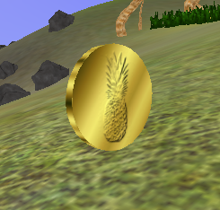

Table of contents
-
About
- Abstract
- Game mode
- Goal
-
Getting it
- Warning
- Requirements
- Compilation step by step
- Screenshots
- Contact

About
Abstract
insula is a an arcade racing game, meaning it doesn't focus on realism. It started as a simple graphics test for the sge game engine but soon became more than that. Note though: The game is still a "sandbox" to play with new features, it is not supposed to be stable or compatible with older or different compilers, architectures or graphics cards!
Game mode
The game is supposed to be played in hot seat mode, meaning: It's boring to play alone, yet there's no network support and no support for parallel play. So players have to take turns.
Goal
|  |
| Fig. 1: A nugget example |
The goal for each player (they're all competing, no teams!) is to drive around the map and collect all "nuggets" as fast as possible. Nuggets are randomly placed coins which can be collected by driving through them (see fig.1). The nugget positions are generated once, not for each turn,so no player has the advantage of beneficial nugget placement (they could be all aligned in a row so you only have to hit the gas pedal once, it's random after all). The starting position is also the same for each player.
Getting it
Warning
Getting insula is not easy and you might not be able to compile it at all. Be patient, don't get frustrated, don't panic. :)
Requirements
System
insula uses OpenGL-3, so you need a fairly recent graphics card. Also, it's written in C++0x (see the Wiki article for more info), so you need a compiler that supports it. Currently, only >=gcc-4.5 is a candidate, but clang and MSVC++-10 might work in the future, too (maybe even now, it's untested on those compilers).Libraries
insula relies on the following "main" libraries:
- boost – an essential C++ library (portable)
- sge (as mentioned above) – the graphics engine, currently supporting OpenGL as a graphics backend, OpenAL as a sound backend and libpng to load images. You will need all of those dependencies. Currently only runs on Linux. Windows support is on the way, though.
- bullet for the physics (portable)
- fcppt – a C++ toolkit, similar to boost (which is already a dependency for sge, but insula relies heavily on it, too).
- mizuiro – a templated image processing library (already a depenceny for sge), similar (but far superior to) boost::gil
Compilation step by step
System
This installation guide will assume that you use >=gcc-4.5. I will not explain how this is installed. It's highly dependant on the distribution. To test if you've got the right compiler, open a terminal and type:
gcc --version
It should output something like this:
gcc (Gentoo 4.5.1 p1.0, pie-0.4.5) 4.5.1 Copyright (C) 2010 Free Software Foundation, Inc. This is free software; see the source for copying conditions. There is NO warranty; not even for MERCHANTABILITY or FITNESS FOR A PARTICULAR PURPOSE.
As you can see, I'm using gcc-4.5.1 on Gentoo Linux. From now on I'll assume the right compiler is present.
You'll also need boost. This is included in most Linux distributions and it's available on Windows, too. Installation is – again – distribution and operating system dependent and I'll not explain it here.
You also need git to download some of the libraries (not all of them are downloadable via http). You can download git from here. Compiling it from source is straightforward: just download, extract, go to the directory and do ./configure --prefix=/tmp && make install, assuming you want it installed in the /tmp/ directory. git is, however, widely available on all operating systems.
A note about the process
I'm assuming you're only interested in trying out insula and you don't want permanent or system-wide changes to your Linux installation. So we're going to install all of the libraries in a separate (and later deletable) directory structure. I'll refer to the root of that directory structure asROOT
from now on. For example, insula will be located
in ROOT/insula, sge will be installed
in ROOT/include/sge, ROOT/lib and so
on.
fcppt
Installation instructions for fcppt are already available here but I'll explain it again here. Just for consistency.
FIXME Get the latest version of fcppt either from the installation instruction page (see above) or from git using the command git clone git://timeout.supraverse.net/fcppt.git. This, of course, assumes that you have git installed. You end up with a

{kind=link}
{kind=link}
{kind=link}